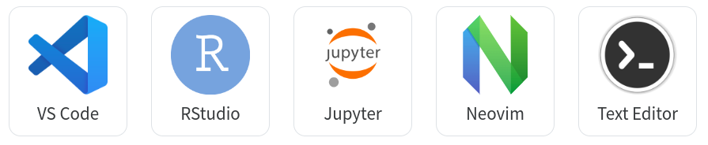

Les langages du web
Les langages du web sont les technologies qui permettent de créer, structurer, styliser, et faire fonctionner des sites et applications web. On peut les classer en trois grandes catégories : langages de structure, de style, et de comportement, auxquels s’ajoutent les langages côté serveur et les technologies associées.
Pour écrire du code, on utilise génralement une IDE (environnements de développement). Il en existe de nombreux sur la marché et un certains npmbreu d’entre eux sont gratuits. Mais on peut utiliser un simple éditeur de texte type notepad ou notepadd++. Ensuite, il suffit d’ouvrir les fichiers avec votre navigateur web préféré.  Vous pouvez aussi utiliser des environnement de développement en ligne spécialement conçu pour tester, partager et déboguer du code. On peut citer JSFiddle, CodePen, JSBin, PlayCode, StackBlitz ou Observable. Pour ce cours, je vous propose d’utiliser JSFiddle.
Le HTML
Le HyperText Markup Language, généralement abrégé HTML est ce qui correspond au squelette d’une page web. C’est la structuration du document. Le HTML est structuré par des balises emboitées les unes dans les autres.
<!DOCTYPE html>
<html>
<head>
<title>Page Title</title>
</head>
<body>
<h1>This is a Heading</h1>
<div id="mondiv">something here</div>
<p>This is a paragraph.</p>
<!-- commentaire -->
<ul>
<li>Pomme</li>
<li>Banane</li>
<li class= "highlight">Orange</li>
</ul>
</body>
</html>Le CSS
Les feuilles de style en cascade, généralement appelées CSS de l’anglais Cascading Style Sheets, forment un langage informatique qui décrit la présentation des documents HTML. Le CSS définit le style et le positionnement des éléments sur la page.
body {
background-color: lightblue;
}
h1 {
color: white;
text-align: center;
}
p {
font-family: verdana;
font-size: 20px;
}
ul {
list-style-type: disc; /* Puces rondes par défaut */
padding-left: 1em; /* Légère indentation */
font-family: sans-serif;
}
li {
margin: 0.3em 0; /* Petit espace entre les lignes */
}On peut modifier le styles l’éléments spécifiques qu’on identifie par une classe ou un identifiant.
#mondiv {
background-color: #f0f8ff; /* Bleu très clair */
border-left: 4px solid #007acc; /* Liseré bleu */
padding: 0.5em 1em;
margin: 1em 0;
font-family: sans-serif;
font-size: 1rem;
}
.highlight {
color: #c62828; /* Rouge profond */
font-weight: bold;
background-color: #fff3e0; /* Fond crème doux */
padding: 0.2em 0.5em;
border-radius: 4px;
}En plus de définir les styles, le CSS permet de positionner les éléments dans la page web de différentes façons.
Le positionnement classique utilise la propriété position (static, relative, absolute, fixed, sticky) pour placer un élément de manière plus ou moins indépendante du flux normal. Pour des mises en page plus complexes, le système CSS Grid offre une grille en deux dimensions (lignes et colonnes) permettant d’organiser les éléments de façon souple et précise. Avec display: grid, on contrôle la structure, l’alignement, les espacements et la répartition des contenus, ce qui en fait une solution moderne et puissante pour le web design.
<div id="div1">mon div1</div>
<div id="div2">mon div2</div>#div1 {
position: absolute;
left: 10px;
top: 10px;
}
#div2 {
position: absolute;
left: 120px;
top: 10px;
}Le JavaScript
Le JavaScript est le langage de script du navigateur. Il fonctionne sur tous les navigateurs web sans avoir besoin d’installer quoi que ce soit.
1995
Le langage Javascript a été créé en dix jours en mai 1995 pour la Netscape Communications Corporation par Brendan Eich. Au départ, l’idée était de construire un petit langage pour faire des interactions sur les pages web. Attention, Javascript n’est pas JAVA !
1997
 Le langage Javascript est normalisé depuis 1997 par la commission TC39 de l’organisation ECMA International.
Le langage Javascript est normalisé depuis 1997 par la commission TC39 de l’organisation ECMA International.
2008
Les navigateurs web ont travaillé à de nouveaux moteurs pour améliorer les performances. V8 est un moteur JavaScript open-source développé par le projet Chromium pour les navigateurs Web Google Chrome et Chromium (dernière version 31 janvier 2022). Il y a aussi SpiderMonkey pour Firefox, Chakra pour Microsoft Edge et JavaScriptCore pour Safari.
2009
 Création de Node.js par Ryan Dahl, qui permet d’utiliser le JavaScript comme langage de programmation côté serveur (back-End).
Création de Node.js par Ryan Dahl, qui permet d’utiliser le JavaScript comme langage de programmation côté serveur (back-End).
2015
Depuis 2015 (ES6 ou ES2015), le langage JavaScript est mature. Performant. Et est implémenté de manière harmonisée dans tous les navigateurs. On parle de modern JavaScript
demain ?
De nouvelles fonctionnalitées sont ajoutées au langage chaque année.
Une grande communauté
C’est un langage ancien qui dispose d’une très grande communauté.
Les principes de base
Les variables permettent de stocker des donnes.
let age = 30;
const name = "Lakshmi";Il existe plusieurs types de données : number, string, boolean, objets, tableaux, etc.
let fruits = ["pomme", "banane"]; // Array
let person = { name: "Alice", age: 30 }; // Objet avec clés et valeursJavaScript est un langage fonctionnel. On ecrit beaucoup de fonctions. Par exemple :
function sayHello(name) {
return "Hello " + name;
}Ou, avec l’écriture flechée (arrow functions)
const sayHello = (name) => {
return "Hello " + name;
};Pour visualiser les résultats, on peut utiliser la console.
console.log(sayHello("dude"))Exécuter du code selon une condition.
const age = 20;
if (age > 18) {
console.log("Majeur");
} else {
console.log("Mineur");
}Répéter une action avec une boucle for
for (let i = 0; i < 5; i++) {
console.log(i);
}Le format JSON
Le JSON (JavaScript Object Notation) est un format léger de données créé en 2001 par Douglas Crockford. Il sert à représenter des informations sous forme de paires clé-valeur dans un texte lisible, facile à échanger entre applications. Très simple et universel, JSON est largement utilisé grâce à sa compatibilité avec de nombreux langages de programmation.
Voici à quoi ca ressemble. En fait, il s’agit d’un Array dont chaque élément est un objet. C’ets la façon qu’on a en JavaScrit de formaliser un tableau.
const books = [
{"titre":"Le Petit Prince","auteur":"Antoine de Saint-Exupéry","cycle":"jeunesse","annee":1943},
{"titre":"Harry Potter à l'école des sorciers","auteur":"J.K. Rowling","cycle":"jeunesse","annee":1997},
{"titre":"Les Misérables","auteur":"Victor Hugo","cycle":"classique","annee":1862},
{"titre":"Dune","auteur":"Frank Herbert","cycle":"science-fiction","annee":1965},
{"titre":"Indignez-vous !","auteur":"Stéphane Hessel","cycle":"essai","annee":2010},
{"titre":"Madame Bovary","auteur":"Gustave Flaubert","cycle":"classique","annee":1857},
{"titre":"1984","auteur":"George Orwell","cycle":"science-fiction","annee":1949},
{"titre":"Le Capital","auteur":"Karl Marx","cycle":"essai","annee":1867},
{"titre":"Fahrenheit 451","auteur":"Ray Bradbury","cycle":"science-fiction","annee":1953},
{"titre":"Surveiller et punir","auteur":"Michel Foucault","cycle":"essai","annee":1975},
]Connaitre le nombre d’éléments
console.log(books.length)Récupérer l’auteur de la 2e ligne
console.log(books[1]) // 1 car la première ligne a l'index 0.Récupérer la 2e ligne
console.log(books[1].titre) Ajouter un élément en fin de tableau (push)
const newBooks = {"titre":"Harry Potter à l'école des sorciers","auteur":"J.K. Rowling","cycle":"jeunesse","annee":1997}
books.push(newBooks)
console.log(books)Ajouter un élément au début du tableau (unshift)
const newBooks2 = {"titre":"Le Deuxième Sexe","auteur":"Simone de Beauvoir","cycle":"essai","annee":1949}
books.unshift(newBooks2)
console.log(books)Trier(sort)
console.log(books.sort((a, b) => a.annee - b.annee))Filtrer (filter)
console.log(books.filter(d => d.cycle == "classique"))Itérer avec map et forEach
console.log(books.map(d => d.auteur))let auteurs = [];
books.forEach(d => {
auteurs.push(d.auteur);
});
console.log(auteurs);Récupérer des modalités uniques (Set)
console.log(books.filter(d => d.cycle == "classique"))console.log(books[1]) // 1 car la première ligne a l'index 0.Les filtres permettent de récupérer
let cycles = books.map(d => d.cycle)
cycles = new Set(cycles)
cycles = Array.from(cycles)
console.log(cycles)Exercice
Copiez ce code dans JSFidle et remplissez-le.
xxx:::
Les bibliothèques
Une bibliothèque JavaScript est un ensemble de fonctions ou d’objets prêts à l’emploi, écrits en JavaScript, que tu peux réutiliser dans tes projets pour éviter de tout coder à la main. Les bibioltèques JavaScript sont disponibles dans npm (abréviation de Node Package Manager).
Il y a plusieurs façons d’importer une bibliothèque. Ici, on utilise un CDN (Content Delivery Network, ou réseau de diffusion de contenu). C’est la méthode la plus simple pour les projets HTML statiques.
<!-- Import de la bibliothèque-->
<script src="https://cdn.jsdelivr.net/npm/canvas-confetti@1.6.0/dist/confetti.browser.min.js"></script>confetti({
particleCount: 150,
spread: 70,
origin: { y: 0.6 }
});Le DOM
document.querySelector(“button”).addEventListener(“click”, () => { alert(“Bouton cliqué !”); });
document.getElementById(“titre”).textContent = “Bonjour !”;